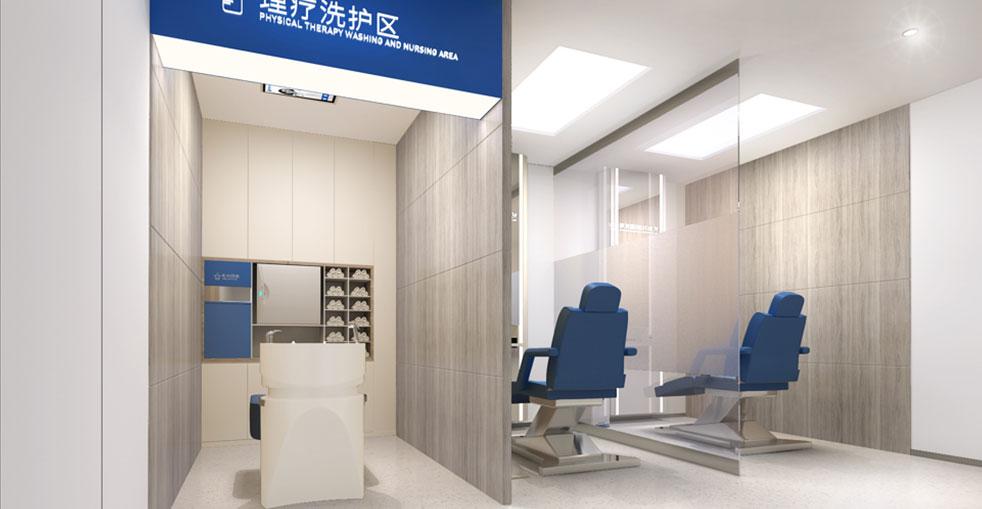

藝術眉毛設計與精確移植，打造完美臉部框架

我們的眉毛植髮手術是一門需要手術精確度和美學專業知識的藝術。我們的專業團隊已進行了數千次眉毛修復，創造出自然、美麗的眉毛，完美襯托您的臉部特徵。我們使用超細微針技術，單獨放置每個毛囊，確保最自然的生長方向和濃度。
基於臉部特徵和氣質的個人化眉毛設計
藝術設計與手術精確度的結合
詳細的臉部分析和基於您特徵的個人化眉毛設計
在任何手術開始前，創建並確認精確的眉毛模板
從合適的供體區域仔細收集纖細的單毛髮毛囊
遵循自然眉毛生長方向和角度的超細切口
單個毛囊放置，創造完美的濃度、弧度和流暢度
詳細的護理說明和12個月的追蹤，以獲得最佳效果
業界領導者，成效卓越
自2006年以來微針植髮技術的先驅與領導者
遍佈中國主要城市，均秉持相同的高標準
創新的微針和植髮筆技術，實現卓越成效
受到全球患者信賴，帶來改變人生的成效
為國際患者在整個治療過程中提供全面英文支援
最先進的設施和嚴格的安全協議，讓您安心
看看我們的患者實現的驚人轉變


與我們滿意患者的珍貴時刻

成功手術後與我們的醫療團隊合影

與我們的醫生一起慶祝出色的成效

另一位滿意的患者分享他們的喜悅

出院前與我們的專家合影

開心的患者與陳醫生治療後合影

興奮的患者展示他們的新外觀
聽聽我們全球滿意患者的心得
"我的眉毛因為多年過度拔變得非常稀疏！大麥的眉毛植髮給了我豐盈、自然的眉毛！我在Google上看到的推薦真的很對！"
"醫生根據我的臉部專門設計了我的眉毛！它們看起來如此自然——我的香港朋友甚至看不出我做了植髮！我感覺更加自信了！"
"我因為圓禿失去了大部分眉毛！大麥的植髮完全修復了它們！從澳門過來做的，現在我有美麗、豐盈的眉毛！"
"我在Bing上研究了數月才選擇大麥做我的眉毛！360度植髮筆讓它們看起來如此自然！台灣的朋友可以放心！"
"我的眉毛如此稀疏，以至於我對拍照感到自我意識！植髮後，我現在喜歡拍照了！從香港過來真的很值得！"
"我花了數千美元在紋繡上，從來看起來不對！眉毛植髮給了我永久、自然的眉毛！從澳門過來做的，太滿意了！"
體驗我們現代舒適的設施

我們最先進的設施

在我們的高級休息室放鬆

無菌且先進

私密且專業

舒適的術後空間

歡迎的入口
找到關於植髮的常見問題解答
聯絡我們進行免費諮詢
15810155700
+86 13730143529
hairtransplant@qq.com